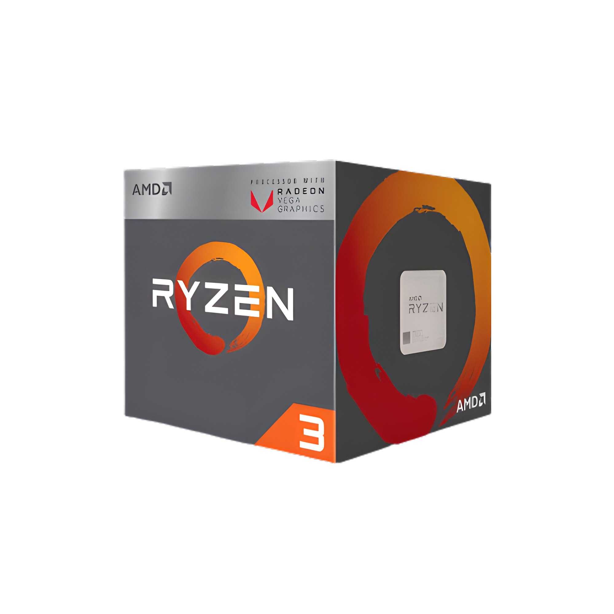
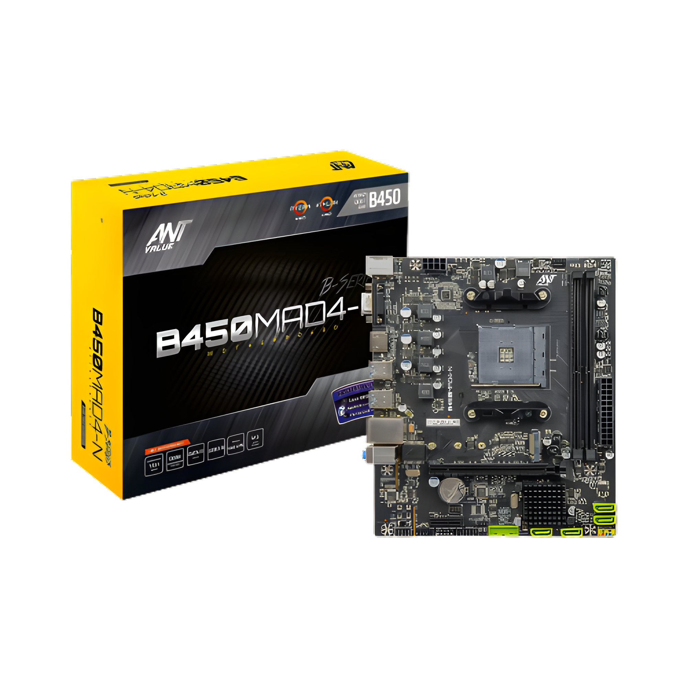
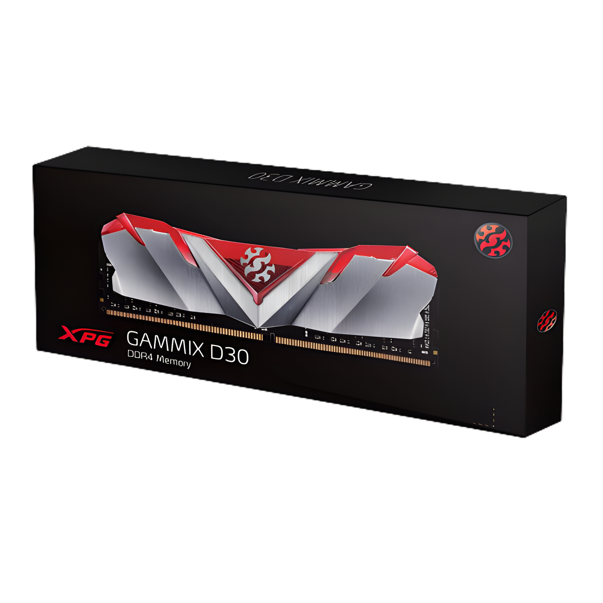
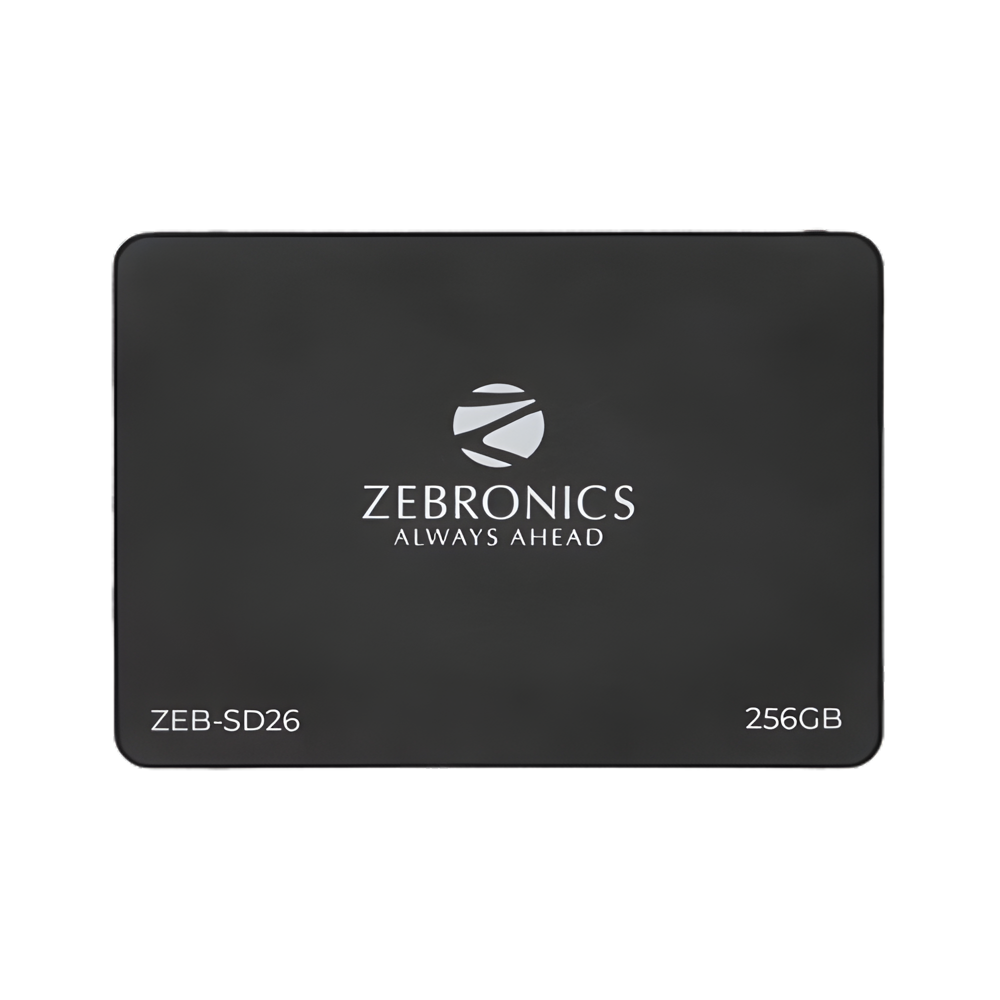
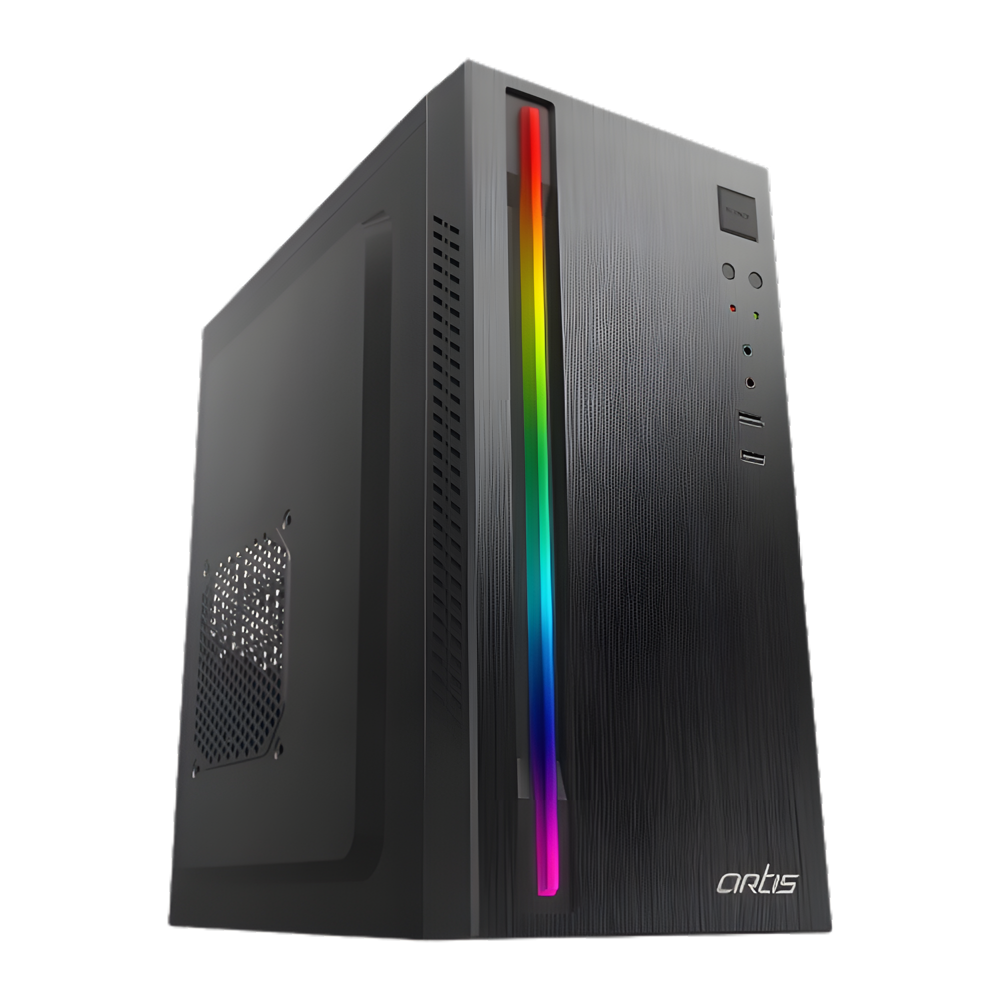
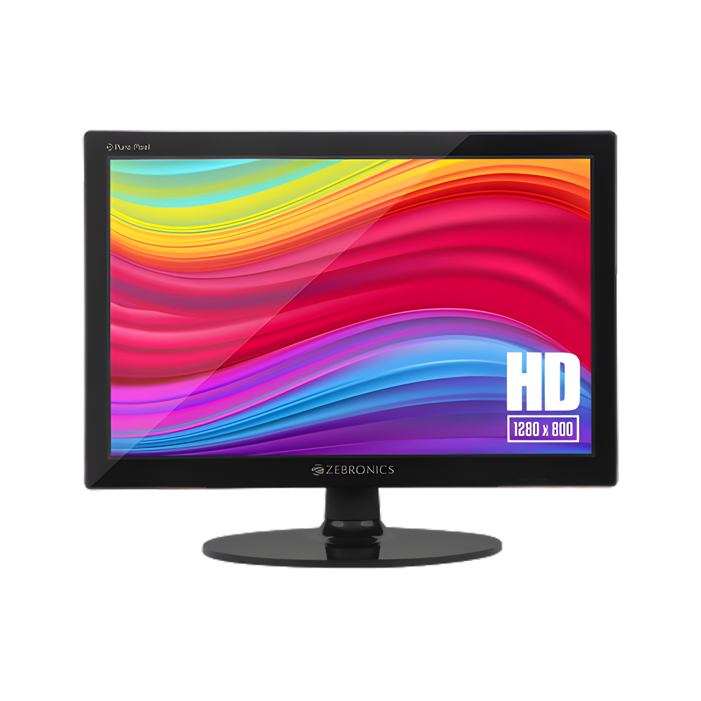

Today, we're going to build a PC under 20,000 INR, monitor included, especially for coders. This time, I have decided to build the PC from purchase to assembly, step by step. Some people like pre-built, but I never recommend them as they often come with components that might not perform well, and you usually can't pick what you want. Plus, upgrading them later is a pain. Building a custom build lets us choose exactly what we need for coding/gaming and opens up better options for upgrades down the line. Also, it's budget-friendly as we have the flexibility to slightly tweak the components. Let's build our coding PC!
For the processor, I have selected the AMD Ryzen 3 3200G. This is an excellent-value budget CPU that delivers surprisingly strong graphics performance, making it a perfect CPU for a budget-friendly Coding PC build.
For the motherboard, I have selected the Ant Value B450MAD4-N mATX Gaming Motherboard. This is an excellent-value budget Motherboard at this price range.
For memory, I'll be utilizing the XPG ADATA GAMMIX D30 DDR4 8GB RAM module. This memory module offers a capacity of 8GB and operates on 3200mhz, providing reliable and efficient performance for your budget PC setup.
For storage, I will be incorporating the ZEB-SD26 256 GB Solid State Drive. This SSD brings a capacity of 256 GB, offering ample space to store your data, applications, and operating system.
For the cabinet and power supply unit (PSU), I have opted for the Artis 2520 2.0 C Computer Cabinet. This cabinet provides a functional and compact design to house your components while offering space-efficient organization. Additionally, it comes with an integrated power supply unit (PSU) to efficiently power your system.
As for the monitor, I have selected the ZEBRONICS Zeb-V16HD LED Monitor. This is one of the best monitors in its price range.
As of the time of writing, the estimated cost of this build is approximately ₹16,682 without the monitor. However, it's worth noting that these components could potentially be acquired at even more budget-friendly prices during Amazon and Flipkart sale events.
This PC setup strikes a great balance between affordability and performance. When compared to laptops in the 30-40k price range, you can expect solid performance from this build. The combination of the processor, memory, storage, motherboard, and integrated graphics ensures a capable and cost-effective computing experience.